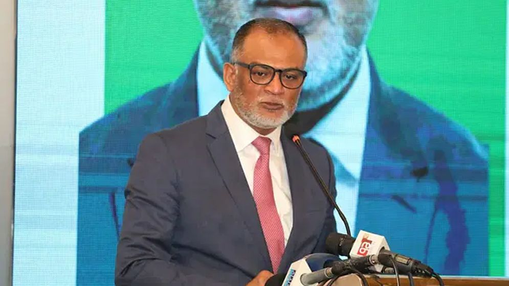
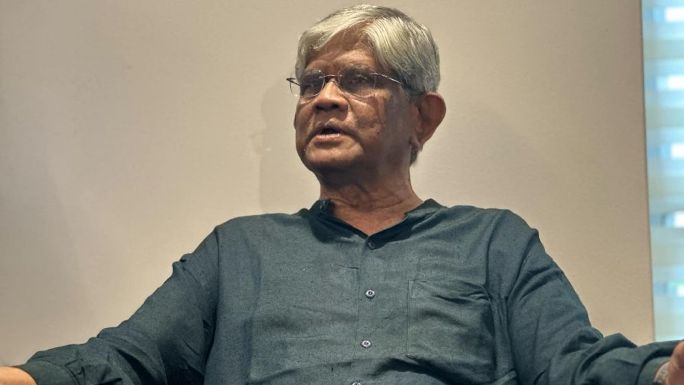
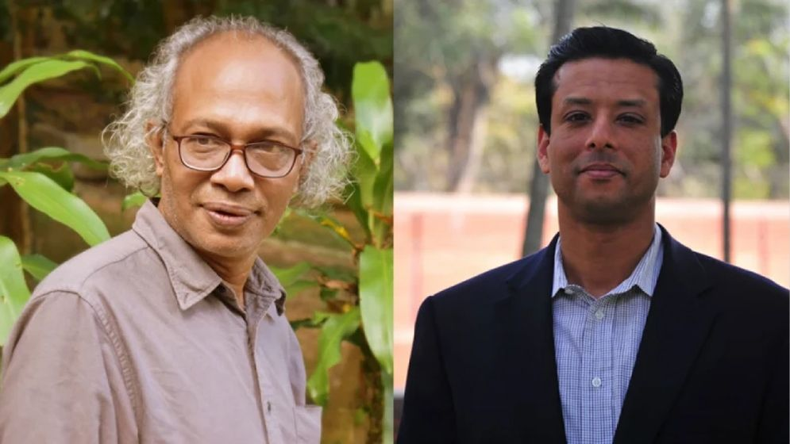

During the A. League period, I paid a bribe of Tk 20 crore for gas

During the rule of Awami League, they had to pay 20 crore bribes to get gas connection to industrial
factories, trade advisor Sekh Bashir Uddin said, after investing in industrial factories, 40 km pipeline
had to be established with his own money to get gas. For the construction of this pipeline, I have paid
a bribe of 20 crore rupees only for road cutting. And I had to pay a bribe for this bribe
24 NOV 2024, 10:10PM
India must push for fair share of water: Finance Adviser

15 aug 2024, 12:15pm
Interim government economic adviser. Saleh Uddin Ahmed said, Europe has many monstrous rivers, starting
from Germany and ending in the Netherlands. Ships move in them. There may have been political issues in
themselves but the principle of sharing river water was there. India has no reason not to give us water.
India has to press on it. He said this while addressing the chief guest at the seminar titled 'Upstream
Joint River Water Withdrawal: Economic Disaster of Bangladesh' organized by the International Farakka
Committee, Bangladesh at the Abdus Salam Hall of the National Press Club on Saturday (November 23).
Dr. Saleh Uddin Ahmed said, India has no reason not to give us water. It has to be pressed. India needs
political and social pressure to get its fair share of water.
He said, when there is water pressure in India, we open the sluice gates here. Again they close the
sluice gates when there is shortage of water. They are doing it at will, that's why we are not getting
water. This is causing problems in our farming. Day by day becomes like a desert.
He also said that the work we are doing is very challenging. They need people's support. We will work to
ensure that not only Farakka, but also the 54 rivers that have a fair share of water.
The editor of New Age called Joy's claim as propaganda

25 sep 2024, 08:10pm
Nurul Kabir, editor of New Age newspaper, termed the allegation made by former Prime Minister Sheikh
Hasina's son Sajib Wazed Joy in a Facebook post as completely baseless and false. He also commented that
it is nothing but an unreasonable and untrue campaign.Nurul Kabir made this comment in a post on his
verified Facebook page on Saturday (November 23).
In a post from Joy's verified Facebook page on November 16, it was claimed that Dr. The Yunus-led
interim government pressured New Age editor Nurul Kabir to remove a news story.
The post mentions that the New Age, in a report published on November 16, said that eight people had
been extrajudicially killed in the first 52 days of the current government and that report was withdrawn
under pressure.
In response to Joy's allegation, New Age editor clearly stated in his Facebook post, 'This is a baseless
and false allegation. No government agency directed me or New Age to remove this report and we did not
remove the story.'Nurul Kabir also said, 'Mr. Sajib Wazed Joy may not know or did not try to know that
even Dr. Even if the Yunus administration requested us to remove the news, we would not have done so.
New Age has always been known for independent journalism and we have never bowed down to any government.
Not even during his mother's reign'.
The New Age editor also said, 'Our newspaper has always placed great value on ethics and professional
integrity. No past government could deviate us from this integrity. So this claim of victory is nothing
but an absurd and untrue campaign'.
After such comments, the continuity of independent journalism of New Age and its editor Nurul Kabir has
once again come into discussion. It has also given a fresh look at the context of media freedom in the
current political context of Bangladesh.